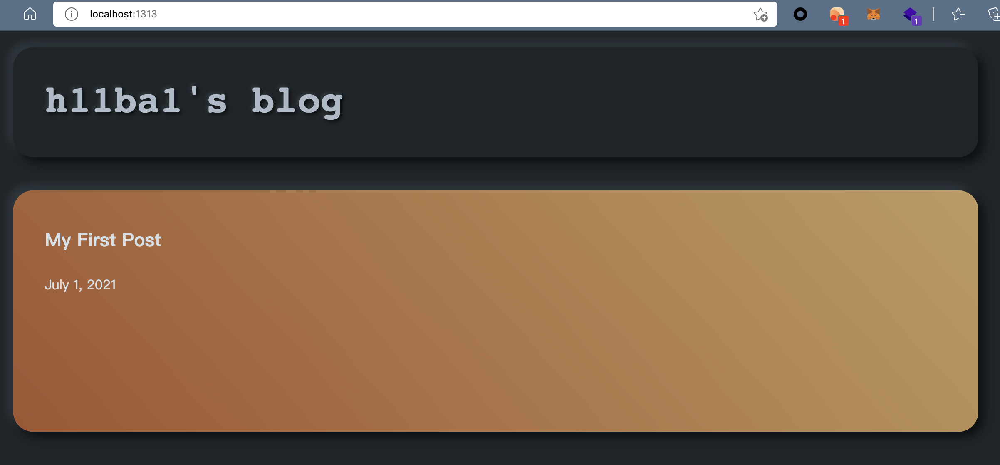
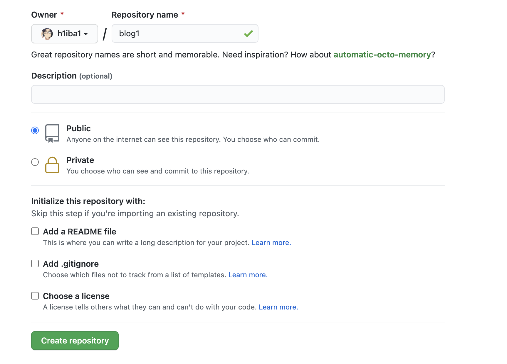
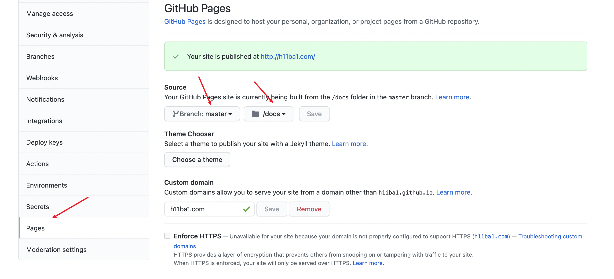
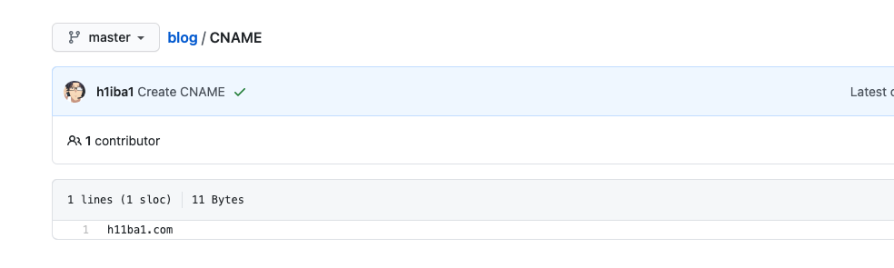
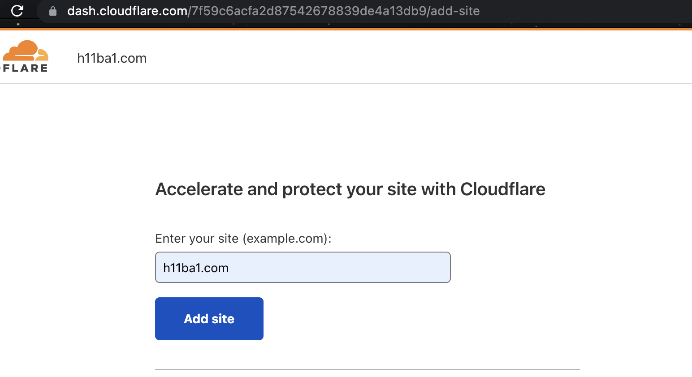
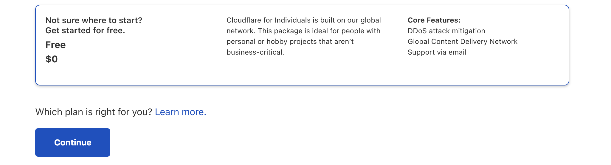
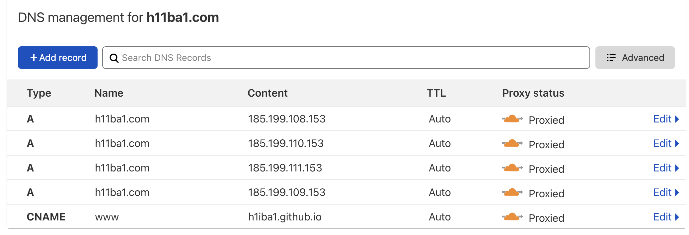
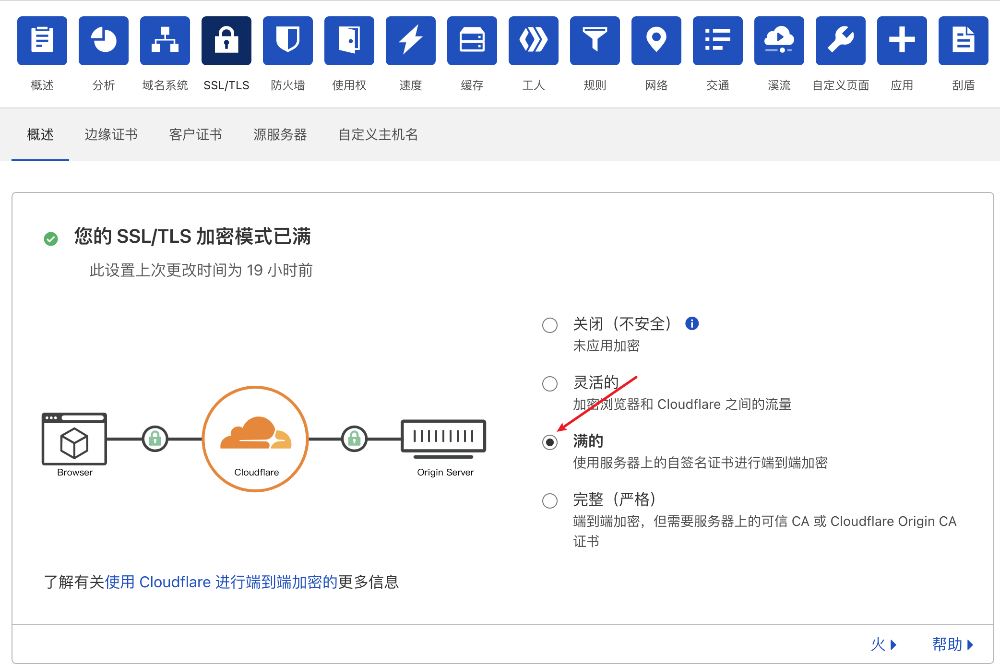
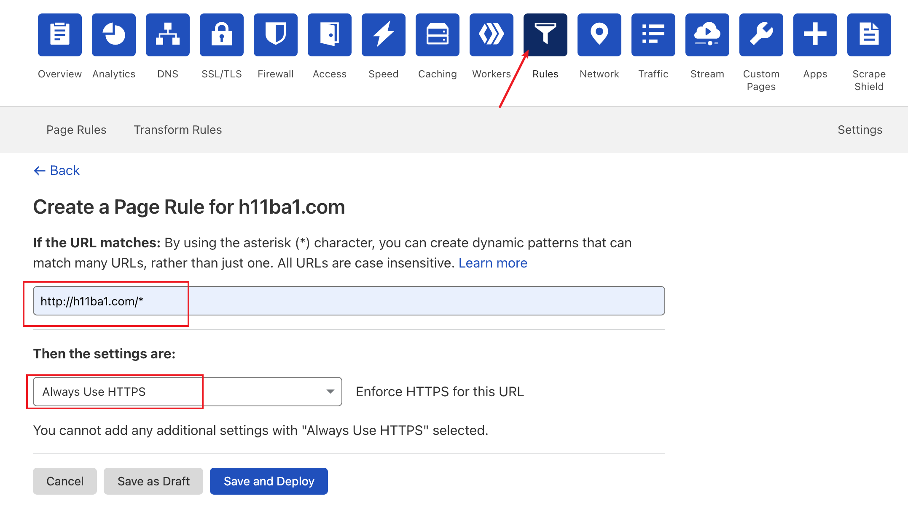
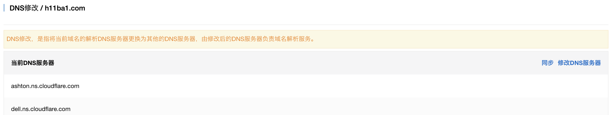

1.部署hugo
mac安装Hugo：
1
2
| brew install hugo
hugo version 查看hugo版本
|
hugo创建博客:
1
| hugo new site h11ba1.com #在当前目录下创建h11ba1.com文件夹
|
生成新的文章：
1
| hugo new posts/first-post.md
|
文章内容如下：
1
2
3
4
5
| ---
title: "My First Post"
date: 2021-07-01T13:46:58+08:00
draft: flase
---
|
将草稿draft改为flase。
配置博客主题：
1
2
3
| git init
git submodule add https://github.com/miiiku/hugo-theme-kagome.git ./themes/kagome # 将此存储库作为Git - 子模块，这样将更容易获取这个主题的更新
echo theme = \"kagome\" >> config.toml # 更改配置文件，将主题加入配置
|
本地预览：

2.发布并托管到github
创建一个github仓库：

发布代码到github：
修改配置：
1
2
3
4
5
6
7
| baseURL = "https://h11ba1.com"
languageCode = "en-us"
title = "h11ba1's blog"
theme = "kagome"
publishDir = "docs" # 修改静态代码文件夹为docs目录
defaultContentLanguage = "zh-cn"
uglyURLs=true
|
更改github仓库配置：

同步代码到GitHub：
1
2
3
4
5
6
| hugo #编译md文档为静态文件。编译后的文件可以在docs文件夹下面找到
git add .
git commit -m "first commit"
git remote add origin https://github.com/h1iba1/blog.git
git push -u origin master
|
3.配置自定义https域名
配置自定义的https子域名主要参考这篇文章：https://zhaouncle.com/hugo_03/
简单记录一下过程：
创建CNAME文件：
在仓库根目录建立一个cname文件写入自定义的域名

注册cloudflare添加站点：

选择免费功能：

添加dns解析记录：
1
2
3
4
5
| A h11ba1.com 185.199.108.153
A h11ba1.com 185.199.109.153
A h11ba1.com 185.199.110.153
A h11ba1.com 185.199.111.153
CNAME www h1iba1.github.io
|

更改ssl/tls设置：

配置页面规则：

更改阿里云域名dns服务器：

4.hugo的一些简单配置
config.toml文件：
1
2
3
4
5
6
7
8
9
10
11
12
13
14
15
16
17
18
19
20
21
22
23
24
25
26
27
28
29
30
31
32
33
34
35
36
37
38
39
40
41
42
43
44
45
| baseURL = "https://h11ba1.com"
languageCode = "en-us"
title = "h11ba1's blog"
theme = "kagome"
publishDir = "docs"
defaultContentLanguage = "zh-cn"
uglyURLs=true
[menu]
# 配置菜单栏
[[menu.main]]
identifier = "blog"
name = "Blogs"
url = "/posts"
[[menu.main]]
name = "Categories"
identifier = "categories"
url = "/categories/"
[[menu.main]]
identifier = "tags"
name = "Tags"
url = "/tags/"
[[menu.main]]
identifier = "about"
name = "About"
url = "about/"
# 配置页脚
[[menu.social]]
# 唯一标识符
identifier = "github"
# 名称
name = "github"
# url地址
url = "https://github.com/h1iba1/"
# 权重 越小越靠前
weight = 1
description = "这是一个网址"
# 配置个人介绍
[author]
name = "h11ba1"
email = "h11ba1@qq.com"
description = "h11ba1's blog"
avatar = "https://h11ba1-blog.oss-cn-beijing.aliyuncs.com/blog-头像/QQ20201212-0.jpg"
|
文章配置：
1
2
3
4
5
6
7
8
9
| ---
title: "文章标题"
date: 2021-07-01T13:46:58+08:00
draft: flase # flase表示不是草稿，可以公开显示
categories: ["代码审计"] # 分类
tags : ["thinkphp"] # 标签
cover : "https://h11ba1-blog.oss-cn-beijing.aliyuncs.com/test/4B2E0B3833CDACAB61B1C849A3BC8633.jpg" # 文章图片
toc : true # 添加目录支持
---
|

 alipay
alipay